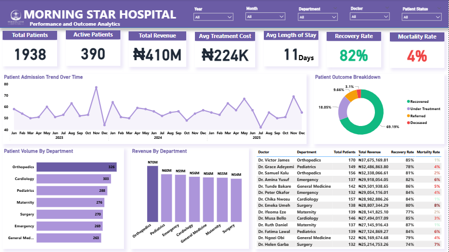
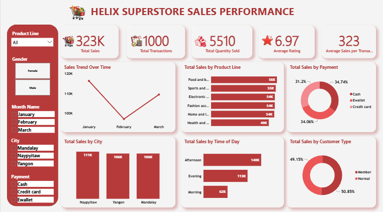

Onyinyechi Nwosu
Data Analyst | Turning Data into Clear Business Insights
Result-driven Data Analyst with 3+ years of experience turning complex data into clear and actionable insights using Power BI, Excel, and SQL to uncover insights, optimize performance and support data-driven decision making.
Featured Projects
Hospital Performance & Outcome Analytics Dashboard — Morning Star Hospital
Problem: Healthcare administrators at Morning Star Hospital needed a centralized view to monitor patient outcomes, hospital performance, and operational efficiency across departments and time periods.
The Hospital Performance Dashboard provides a comprehensive overview of key healthcare metrics, focusing on patient volume, treatment outcomes, and revenue performance. It highlights KPIs such as total patients, active patients, total revenue, average treatment cost, length of stay, recovery rate, and mortality rate.
The dashboard also analyzes patient trends over time, departmental performance, revenue distribution, and outcome breakdowns, enabling data-driven decisions to improve patient care and hospital efficiency.

Customer Support Performance Dashboard
Problem: The support team needed a clear way to monitor response efficiency, resolution performance, customer satisfaction, and ticket trends across different support channels.
The Customer Support Performance Dashboard provides a comprehensive overview of key service metrics, focusing on response efficiency, resolution effectiveness, and customer satisfaction. It highlights KPIs such as total tickets, average response time, average resolution time, CSAT, and escalation rate.
It further analyzes performance across support channels, issue categories, agent performance, and ticket trends, helping identify operational gaps and opportunities to improve service delivery.

Sales Performance Analysis Dashboard — Helix Superstore
Problem: Helix Superstore needed a clear way to monitor sales performance, understand customer purchasing behavior, and identify which products, cities, payment methods, and time periods were driving revenue.
The Helix Superstore Sales Performance Dashboard provides a comprehensive overview of key sales metrics, focusing on revenue generation, customer behavior, and product performance. The dashboard highlights KPIs such as total sales, total transactions, total quantity sold, average rating, and average sales per transaction.
It further analyzes sales trends over time, product line performance, payment methods, customer segments, city performance, and sales by time of day, helping uncover opportunities to improve sales strategy and business performance.

Skills
Experience
Data Analyst — Versus Africa
- Built dashboards and analyzed survey data across business and market research projects.
- Delivered insights to support campaign performance tracking and business decision-making.
Customer Support & Data Analyst — Onfon Media
- Analyzed user behavior and customer support data to identify performance trends.
- Improved reporting processes by transforming raw data into structured insights.
Let's Connect
I am currently open to Data Analyst roles, reporting opportunities, and collaborations where I can use data to support smarter business decisions.
Email: onyinyechinwosu66@gmail.com
LinkedIn: linkedin.com/in/onyinyechi-janet-nwosu